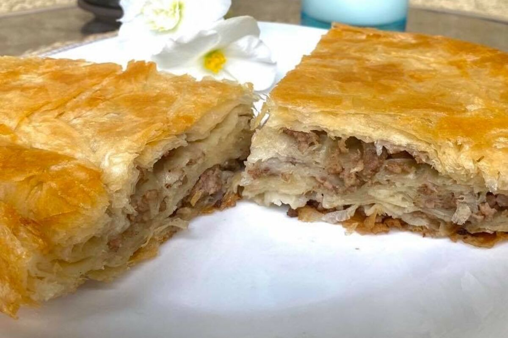

Burek
Burek is a flavorful savory pastry that is made with thin layers of phyllo dough and various fillings, such as cheese, spinach, meat, or potatoes.
It can be shaped into spirals, rolls, triangles or pies.
Ingredients:
- 1 cup chopped onion
- 1 1/2 pounds ground chuck-beef, pork, lamb
- 1 cup fresh parsley, chopped
- 2 teaspoons salt
- 1/2 teaspoon ground black pepper
- 1 pound package phyllo dough
- 5 tablespoons cooking oil
- 3 large eggs, beaten
- 3/4 cup plain Greek yoghurt
- 3/4 cup soda water
Preparation:
- Gather the ingredients
- In a large skillet, saute the onion and ground chuck
- Drain in a colander
- Return the meat-onion mixture to skillet and add the parsley, salt, and pepper and cook for 1 minute
- Lightly coat a 9 x 13-inch pan with cooking spray
- Place 2 sheets in the prepared pan and brush lightly with oil, folding in any overhanging edges
- Spread the cooled ground chuck mixture evenly over the phyllo, pushing up to the edges
- Brush the entire top lightly with oil
- In a medium bowl, mix the eggs with the yogurt and soda water. Pour over the burek. Cover with plastic wrap and refrigerate for 2 hours.
- Preheat the oven to 350 F. Remove the plastic wrap and bake for 45 to 55 minutes, or until golden brown. Cool slightly before serving.

Back to main page